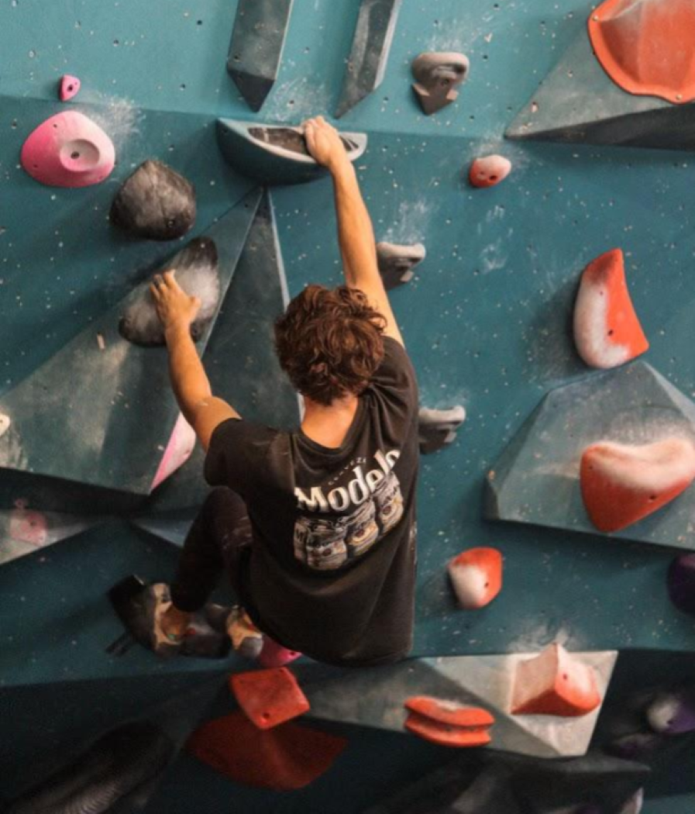

OVERVIEW
The recreational climbing team is for climbers of all skill levels. The purpose of this team is to provide opportunities for University of Utah students to get outside and connect with one another in a meaningful way. Rec team members will have access to weekly team practices, outdoor trips, and special events throughout the school year. Additionally, members of the rec team will have access to big gym membership and gear discounts. The only prerequisite for joining the rec team is enthusiasm about climbing and meeting new people. It is required that all competitive team members are also on the recreational team.
PRACTICES
To be filled in.
OUTDOOR TRIPS
Throughout the school year, our team organizes outdoor climbing trips in nearby climbing areas. Utah and its surrounding states have a lot to offer, so whenever the weather is good we try and get after it! During longer breaks, such as fall and spring break, team funding may be used to book housing. During shorter trips, we will typically find a place to camp as a team. We will do our best to ensure that anyone who would like to participate in these trips will be accommodated, whether they need a ride or camping gear, or climbing gear. These trips are subject to last-minute changes, as the weather can be unpredictable. The best way to stay up to date on these trips is through our team discord.

HOW TO JOIN
Everyone is welcome to join our rec team, but we ask that all team members pay $50 in team dues each year. This money stays within the club and is used to organize team events such as movie nights, park days, and outdoor climbing trips. For outdoor trips, gas money and housing may be provided. Pro tip: If you plan on paying for a gym membership in Salt Lake this year, paying these team dues and joining our roster will save you ~ $300 a year in membership discounts.